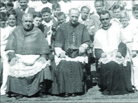
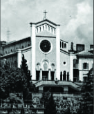

Era nato a Noselo–Villanova, nell'Istria che parlava l'istrorumeno
Come ci ha fatto sapere via e mail l'esule fiumano Antonio Dianich, lo scorso 20 febbraio è scomparso a Pisa don Alberto Cvecich. Era nato a Noselo-Villanova, nell'Istria che parlava l'istrorumeno (vluashki), il 3 luglio del 1921, ma ben presto, dopo aver frequentato nel suo paese natale la scuola elementare, si era trasferito a Fiume per entrare in Seminario.
 "In seguito – ricorda Antonio Dianich – era passato nel Seminario di Venezia per seguire i corsi di teologia, ed era stato poi ordinato sacerdote, nel 1943, dal vescovo di Fiume monsignor Ugo Camozzo. Aveva celebrato la sua prima messa nella chiesa dei Salesiani di Fiume, ma non aveva dimenticato le sue origini istrorumene, celebrando subito dopo la sua messa nella chiesa parrocchiale di Brdo-Briani. Fece molto scalpore il fatto che il "santino" distribuito a ricordo dell'evento fosse scritto in "vluashki" e ancora di più che nella stessa lingua don Alberto dicesse anche la sua predica: era una delle poche volte che questa lingua riceveva una così solenne consacrazione, dopo il tentativo, ben presto terminato, del maestro Glavina, di insegnarla nella scuola.
Nel suo primo incarico pastorale, che era stato quello di cappellano nella chiesa del Duomo di Fiume, nel tempo in cui era parroco monsignor Luigi Torcoletti, don Alberto si fece molto amare dai parrocchiani per l'efficacia delle sue prediche, per la cura che prestava in chiesa alle cerimonie liturgiche, per l'attenzione che rivolgeva ai bambini ed ai giovani, continuando in questo campo il lavoro iniziato già da monsignor Torcoletti con la fondazione dell'Oratorio e dal cappellano don Severino Scala.
"Durante la guerra – rileva Antonio Dianich – correva sotto le bombe per dare assistenza ai malati e ai moribondi, e per dire messa nei rifugi sotterranei; dopo la guerra, nei primi tragici anni dell'occupazione titina, portava una parola di conforto ai malati e ai poveri nelle loro case con pericolo della propria vita, perché strettamente sorvegliato dalla polizia comunista. Mi ricordo che in quelle visite si faceva sempre accompagnare da un chierichetto (mio fratello ed io lo abbiamo fatto più volte), che incaricava di portare alla famiglia visitata una "puturitza," cioè un fascetto di legna da ardere per riscaldarsi (i titini avevano introdotto la vendita della legna a misura invece che a peso).
Essendo proibito fare catechismo a scuola, don Alberto ci riuniva in chiesa alle 2 del pomeriggio, quando la chiesa era vuota: in fondo alla chiesa, vicino alla porta, una spia della polizia ci stava sempre a controllare, finché un giorno don Alberto, alla fine del catechismo, disse a voce alta, per poter essere ben sentito: "Ed ora preghiamo per quella brava persona così devota che viene tutti i giorni a sentire il nostro catechismo". La spia non si fece più vedere. Dopo il catechismo, arrivava quasi sempre una signora che regalava a don Alberto un libro: in realtà era un vassoio di dolci (a Fiume si diceva un guantiera), che noi ci mangiavamo prima di ritornare a casa o di rimanere a giocare nell'Oratorio. Un Natale si fece il "presepio vivente," novità assoluta per quei tempi, e per San Nicolò don Alberto si metteva addosso un piviale e in testa una mitria e distribuiva i regali ai bambini dal palco del teatrino. Così si cercava di rendere meno tristi quei tristi tempi.
Ma don Alberto si prodigava anche per aiutare i bambini che avevano difficoltà nello studio, o volevano imparare il latino che non si insegnava più nelle scuole, come mio fratello che già da piccolo pensava di farsi prete. Mio fratello ed io abbiamo ricevuto da lui in quel tempo la passione per la storia dell'arte che ancora non ci abbandona, perché don Alberto in sagrestia ci mostrava gli atlanti di arte e ci insegnava ad apprezzare la bellezza.
 Ma la situazione con la polizia si faceva sempre più tesa. Un giorno, al processo contro il salesiano don De Martin, a sentire le false accuse del procuratore e dei testimoni, don Alberto non aveva resistito ed aveva gridato qualcosa contro l'ingiustizia che si celebrava in quel "tribunale del popolo". Dopo poco suo cognato, che era stato vigile urbano a Fiume, ma aveva rifiutato l'incarico dopo essere stato sul punto di essere deportato, insieme con tutti gli altri vigili, ed ammazzato chissà dove, aveva saputo, nel suo nuovo lavoro di magazziniere, che la polizia era pronta ad arrestare don Alberto da un momento all'altro. Don Alberto ebbe la prontezza di prendere un taxi (ancora si poteva) e di scappare a Trieste: era il 1946-47 circa.
Dopo una breve sosta a Venezia, don Alberto di traferì a Roma, per seguire i corsi alla Pontificia Università Gregoriana, dove prese la licenza in diritto. Ma la sua nuova diocesi fu Pisa, dove nel frattempo era stato nominato arcivescovo monsignor Camozzo, che era stato vescovo di Fiume durante la guerra e nell'immediato dopoguerra. Grazie a don Alberto e a monsignor Camozzo, mio fratello Severino potè lasciare definitivamente il campo profughi di Gaeta, dove eravamo rifugiati, ed entrare in seminario a Pisa nel 1949, ricevendo poi l'ordinazione sacerdotale dallo stesso arcivescovo nel 1958.
A Pisa, don Alberto fu prima direttore della Casa del Seminario a Calci, poi, dal 1952 al 1955 parroco nel comune di San Giuliano Terme, dove si fece ben volere, nonostante che il paese fosse uno dei più comunisti d'Italia. Dal 1956 fino alla sua morte, don Alberto è stato parroco di una delle chiese più antiche e più belle di Pisa: San Paolo a Ripa d'Arno, appena restaurata dopo i gravi danni subiti nei bombardamenti durante la guerra. È stato anche insegnante di religione nei licei statali e docente di teologia morale nel Seminario di Pisa, dove ha formato generazioni di giovani preti. La sua azione pastorale si è sviluppata soprattutto nei rapporti personali, mediante i quali affascinava le persone per la sua cultura teologica e profana, e per la sua capacità di parlare semplicemente ma con fermezza al cuore della gente. Le sue passioni sono state la musica, l'arte, la liturgia: per l'efficacia delle sue prediche e per la bellezza delle sue liturgie, la sua parrocchia era frequentata da un numero di fedeli probabilmente superiore a quello dei parrocchiani.
Molta gente sentirà la sua mancanza, specialmente tra le persone colte. Per me e per mio fratello, ma anche per molti altri – conclude Antonio Dianich – don Alberto, fin da quando eravamo bambini, è stato un modello da ammirare e da seguire nelle parole e nell'esempio. Requiescat in pace".
February 24, 2007
© 2007 La voce del popolo